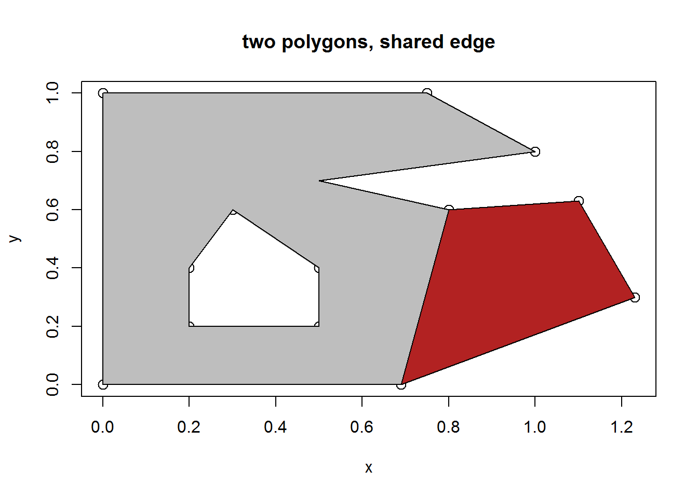
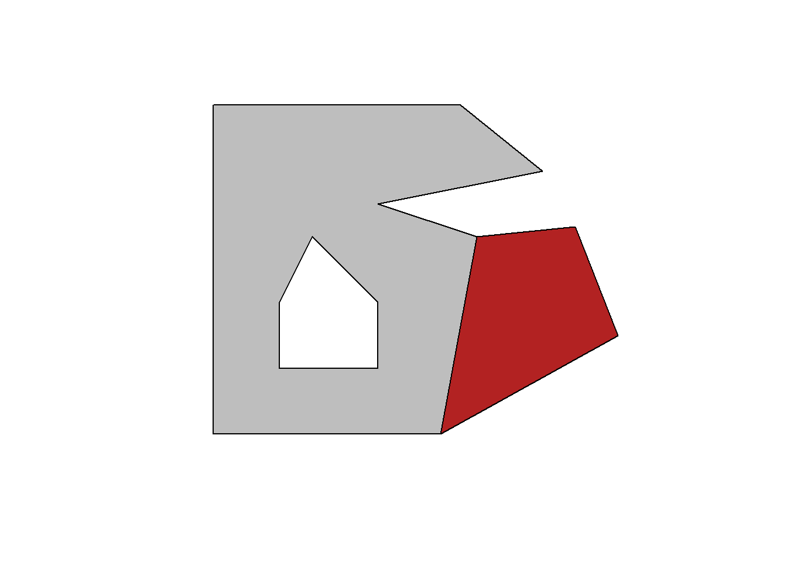
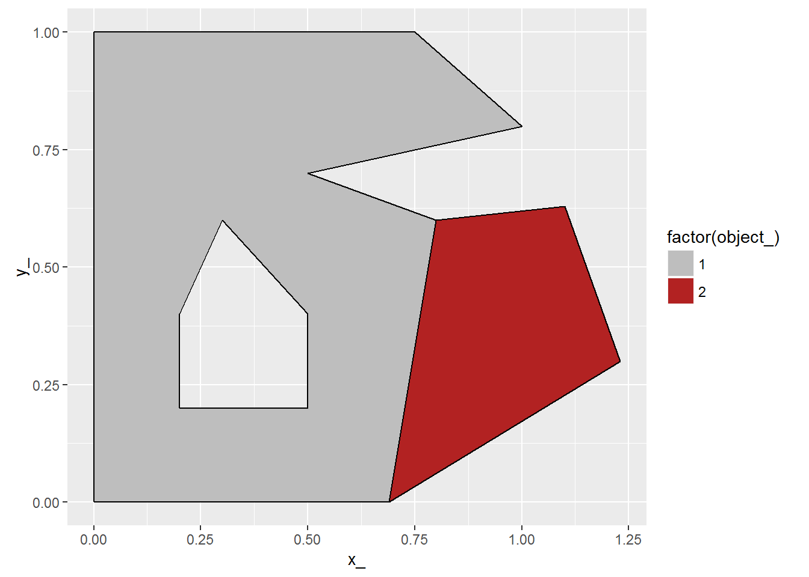
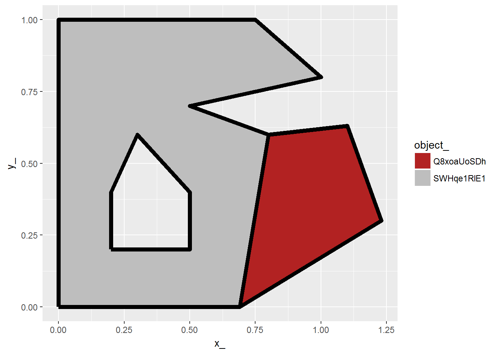
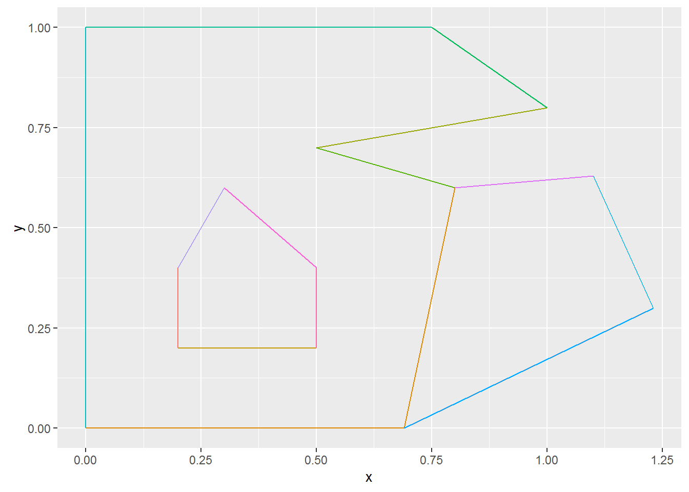
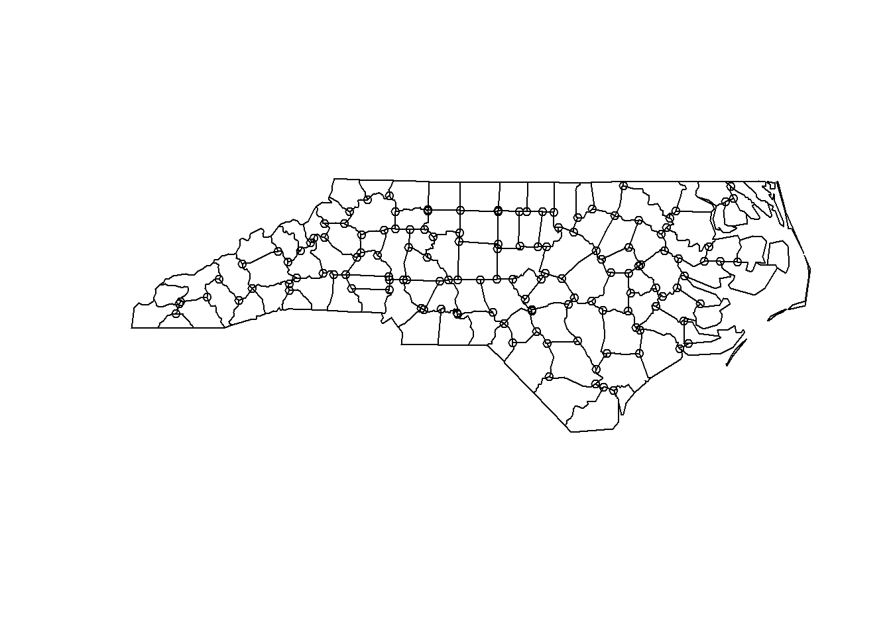
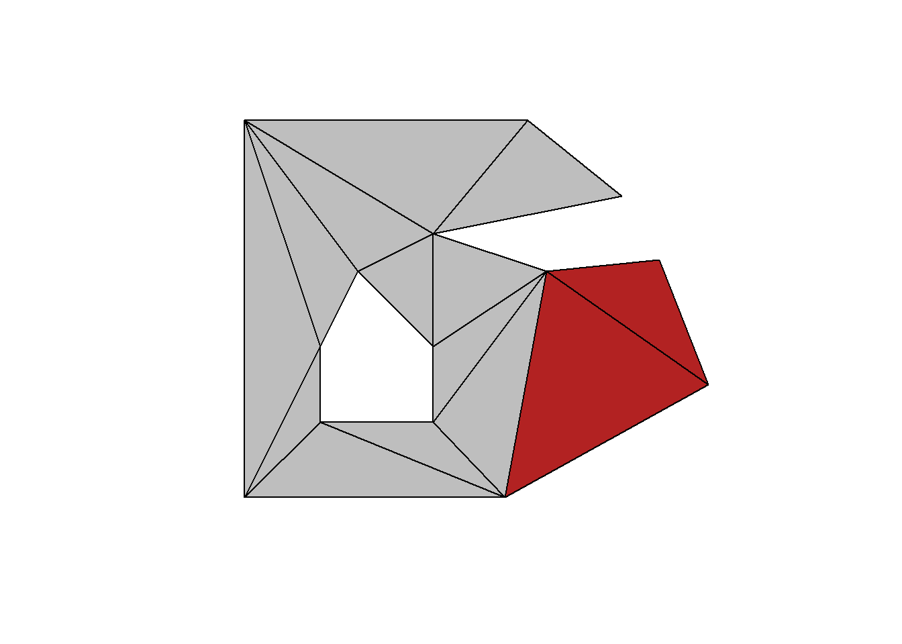

Simple features and the R spatial zoo
Michael Sumner
2016-11-09
Base graphics
p1 <- cbind(x = c(0, 0, 0.75, 1, 0.5, 0.8, 0.69, 0),
y = c(0, 1, 1, 0.8, 0.7, 0.6, 0, 0))
p2 <- cbind(x = c(0.2, 0.2, 0.3, 0.5, 0.5, 0.2),
y = c(0.2, 0.4, 0.6, 0.4, 0.2, 0.2))
p4 <- cbind(x = c(0.69, 0.8, 1.1, 1.23, 0.69),
y = c(0, 0.6, 0.63, 0.3, 0))
pp <- rbind(p1, NA, p2[nrow(p2):1, ])
plot(rbind(pp, p4), cex = 1.3, main = "two polygons, shared edge")
polypath(pp, col = "grey")
polypath(p4, col = "firebrick")
Simple features for R
#devtools::install_github("edzer/sfr")
library(sf)
library(tibble)
x <- st_as_sf(tibble(a = 1:2, geom = st_sfc(list(st_multipolygon(list(list(p1, p2[rev(seq(nrow(p2))), ]))),
st_multipolygon(list(list(p4)))))))
plot(x, col = c("grey", "firebrick"))
Spatial (legacy sp package)
library(sp)
spgdf <- as(x, "Spatial")
plot(spgdf, col = c("grey", "firebrick"))
Grammar of graphics
## fortify model
library(dplyr)
meta <- as_tibble(x %>% dplyr::select(-geom) %>% mutate(object_ = row_number()))
map <- spbabel::sptable(spgdf)
library(ggplot2)
ggcols <- ggplot2::scale_fill_manual(values = c("1" = "grey", "2" = "firebrick"))
ggplot(map %>% mutate(rn = row_number()) %>% inner_join(meta)) + aes(x = x_, y = y_, group = branch_, fill = factor(object_)) +
ggcols + ggpolypath::geom_polypath() + geom_path()## Joining, by = "object_"
Map table
library(spbabel)
mp <- map_table(spgdf)
ggcols <- ggplot2::scale_fill_manual(values = setNames(c("grey", "firebrick"), mp$o$object_))
gg <- ggplot(mp$o %>% inner_join(mp$b) %>% inner_join(mp$bXv) %>% inner_join(mp$v))## Joining, by = "object_"## Joining, by = "branch_"## Joining, by = "vertex_"gg + aes(x = x_, y = y_, group = branch_, fill = object_) + ggcols + ggpolypath::geom_polypath() + geom_path(lwd = 2)
Planar straight line graph
## purrring function
p2seg <- function(x) as_tibble(rangl:::path2seg(x$vertex_))
BxE <- mp$bXv %>% split(.$branch_) %>% purrr::map(p2seg) %>% bind_rows(.id = "branch_")
ggplot(BxE %>% inner_join(mp$v %>% rename(x = x_, y = y_), c("V1" = "vertex_")) %>%
inner_join(mp$v, c("V2" = "vertex_"))) +
geom_segment(aes(x = x, y = y, xend = x_, yend = y_, colour = branch_))
Arc-node
These are the nodes in the graph, we need to traverse the edges to determine the arc-branches, and anything left is just a standalone arc. (But it’s only the 3-branch nodes, we need a better rule to catch the boundaries with only 2 … WIP).
## what are the nodes?
x1 <- st_read(system.file("shape/nc.shp", package="sf"), "nc", crs = 4267)## Reading layer `nc' from data source `C:/Users/mdsumner/Documents/R/win-library/3.3/sf/shape/nc.shp' using driver `ESRI Shapefile'
## features: 100
## fields: 14
## converted into: MULTIPOLYGON
## proj4string: +proj=longlat +datum=NAD27 +no_defsmp <- spbabel::map_table(x1)
nodes <- mp$v %>% dplyr::select(vertex_) %>% inner_join(mp$bXv) %>% distinct(vertex_, branch_) %>% group_by(vertex_) %>% mutate(nb = n()) %>% ungroup() %>% filter(nb > 2) %>% distinct(vertex_) %>% inner_join(mp$v)## Joining, by = "vertex_"
## Joining, by = "vertex_"plot(x1)
points(nodes$x_, nodes$y_, cex = 0.9)
Simplicial complex
sc <- rangl::rangl(spgdf)
plot(x)
l1 <- inner_join(sc$o[1, ], sc$t) %>% split(.$triangle_) %>% purrr::map(function(x) inner_join(x, sc$tXv) %>% inner_join(sc$v)) ## Joining, by = "object_"## Joining, by = "triangle_"## Joining, by = "vertex_"## Joining, by = "triangle_"## Joining, by = "vertex_"## Joining, by = "triangle_"## Joining, by = "vertex_"## Joining, by = "triangle_"## Joining, by = "vertex_"## Joining, by = "triangle_"## Joining, by = "vertex_"## Joining, by = "triangle_"## Joining, by = "vertex_"## Joining, by = "triangle_"## Joining, by = "vertex_"## Joining, by = "triangle_"## Joining, by = "vertex_"## Joining, by = "triangle_"## Joining, by = "vertex_"## Joining, by = "triangle_"## Joining, by = "vertex_"## Joining, by = "triangle_"## Joining, by = "vertex_"## Joining, by = "triangle_"## Joining, by = "vertex_"j <- lapply(l1, function(x) polygon(cbind(x$x_, x$y_), col = "grey"))
l2 <- inner_join(sc$o[2, ], sc$t) %>% split(.$triangle_) %>% purrr::map(function(x) inner_join(x, sc$tXv) %>% inner_join(sc$v)) ## Joining, by = "object_"## Joining, by = "triangle_"## Joining, by = "vertex_"## Joining, by = "triangle_"## Joining, by = "vertex_"j <- lapply(l2, function(x) polygon(cbind(x$x_, x$y_), col = "firebrick"))
Much to still be done.